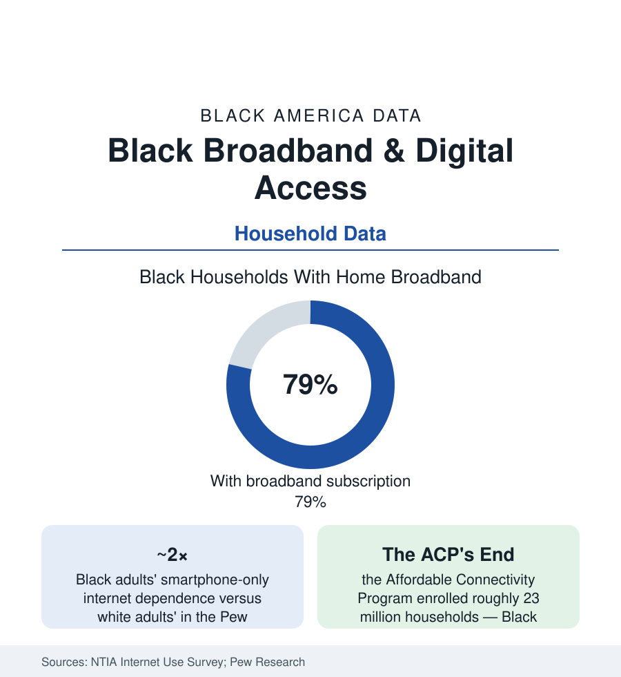

Black Census
Black Broadband and Digital Access: Connected by Phone, Gapped at the Desk
About 8 in 10 Black households have broadband — but Black adults are twice as likely to depend on a smartphone alone. The NTIA and Pew data on the modern access divide.

The digital divide's first era was about who was connected at all; its current era, in the federal data, is about the quality of the connection — and there the Black household's profile is distinctive: roughly eight in ten Black households subscribe to broadband in the ACS data, within several points of the national rate, while Black adults are about twice as likely as white adults to be 'smartphone-dependent' — online through a phone alone, with no home broadband and no computer — in the Pew Research Center's surveys. The phone made the connection. The desk — the homework screen, the job application, the telehealth visit, the small business's back office — is where the divide now lives. This article reads the access file.
The Subscription Map: Income, Geography, and the Two Gaps
The NTIA's Internet Use Survey (the federal benchmark, fielded with the Census Bureau) decomposes the subscription gap into its drivers: income first (the unconnected at every race concentrated in the lowest income bands — the gap between Black and white households shrinking to small numbers within the same income tier in the adjusted analyses), then geography (the rural file — the Black Belt counties where the FCC's availability maps and the on-the-ground speed data disagree most, the 'available' census blocks whose actual service the state challenge processes have been litigating) and the urban affordability gap (service available on the pole, unsubscribed at the kitchen table for price — the urban majority of the unconnected in the NTIA's accounting, a demand problem wearing an infrastructure costume). The device data complete the household picture: computer ownership (desktop or laptop) in Black households running ten-plus points below white households in the ACS computer tables — the hardware of the desk gap, through which the homework-gap studies of the education section measured pandemic learning loss and which the post-pandemic device programs only partially closed.
The Programs: ACP's Rise and Fall as a Natural Experiment
The policy file contains a rare clean experiment: the Affordable Connectivity Program (2021–2024) subsidized broadband by $30 a month for eligible households, enrolled roughly 23 million of them — with Black households enrolling at rates above their population share in the program's data, and the survey follow-ups recording the subsidy's uses in the households' own words (jobs, school, health, benefits — the whole digitized state running through the wire) — and then lapsed when its appropriation ran out, an ending the subscription data are still absorbing. The infrastructure side continues on its own clock: the $42 billion BEAD program's state buildouts (aimed at the availability map), the E-Rate and library-anchor programs (the library article's terminals as the access floor), and the digital-equity plans every state filed under the 2021 law — whose first outcome data will grade the programs against the NTIA survey's next wave. The mobile tier keeps moving underneath all of it: the 5G home-internet products taking share fastest, in the market data, in exactly the urban Black neighborhoods the cable map priced highest — competition arriving through the air.
What the Connection Carries Now
The stakes data have digitized since the first divide: the job market (the employment section's applications running online-only at most large employers — the smartphone-dependent applicant completing a 45-minute application portal on a five-inch screen in the user-experience studies), the benefits state (the SNAP, Medicaid, and unemployment systems' digital-by-default designs and their documented failure modes for the phone-only user), telehealth (the video visit presuming the desk the gap denies), banking (the branch-closure map and the mobile-bank account as the unbanked file's digital fork), and the classroom (the homework gap's post-pandemic persistence in the districts' own device surveys). The cultural layer is the connection's other traffic: Black social media's outsized cultural production (the platform-demographic data — Black users among the most active on the major platforms per capita in the Pew usage tables) generating the era's vernacular culture through the very devices the access file counts as the gap. Both facts are true in the same data. The community is hyperconnected and under-equipped at once, and policy that reads only one of those sentences will miss the household entirely.
Reading the Digital Access Data
Eight in ten connected, twice as likely phone-only, one subsidy experiment run and ended: the broadband file is the census section's newest basic utility — the water-and-lights question of the information century, with the same racial geography the old utilities drew. The next NTIA wave will show what the ACP's ending cost and what the buildouts bought. The desk — the full-sized screen on which the century's paperwork gets done — is where the divide now sits, and it is measured, household by household, in the tables above.
More in Black Census
The Black Population of the United States: Size, Definitions, and Distribution
The Black population of the United States totals 52.8 million — 15.4 percent of the nation. How the Census Bureau defines and counts the population, and where it lives.
Black Median Household Income in the United States
Black median household income stands at $56,490 in the Census Bureau's annual income report — how the figure is measured, how it compares, and what drives it.
The Black Poverty Rate: Levels, Children, and the Long Trend
The official Black poverty rate is 17.1 percent — against 11.1 percent nationally and 7.7 percent for non-Hispanic White Americans. How poverty is measured and what the data show.
Source: National Telecommunications and Information Administration Internet Use Survey; Pew Research Center; U.S. Census Bureau, American Community Survey; FCC National Broadband Map data.